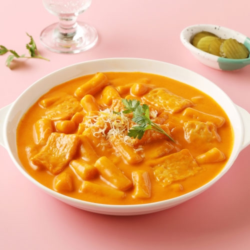

★ 로제 떡볶이 만들기 ★
[ 기본 재료 목록 ]
- 떡볶이 떡 2컵, 비엔나 소세지6개, 베이컨4장, 양파 반개
- 올리브유, 다진 마늘, 파마산 치즈 가루
[ 양념 재료 목록 ]
- 생크림 1컵, 우유 반컵, 토마토소스 1컵, 고춧가루 2큰술, 올리고당 1큰술,
카레가루 1작은술, 소금 약간, 후춧가루 약간
- 소세지, 양파, 떡 등 재료를 준비합니다. 양파는 채를 썰고 비엔나 소세지는 칼집을 내주세요.
- 떡볶이 떡은 한 가닥씩 떼어낸 후 찬물에 10분 이상 담가주세요.
- 달군 팬에 올리브유를 두른 후 다진 마늘, 양파, 베이컨을 볶다가 비엔나소시지를 넣어 볶아주세요.
- 토마토소스와 생크림, 우유를 넣어 끓인 후 떡볶이 떡과 당면, 나머지 양념 재료를 넣어 5분 정도 끓여주세요.
- 그릇에 담은 후 파마산 치즈 가루를 뿌려 맛있게 즐겨주세요.
TIP!
- 기호에 따라 고춧가루의 양을 조절하여 맵기를 조절해 주세요!
- 파마산 치즈가루 대신 피자 치즈나 슬라이스 치즈를 넣어 드셔도 좋아요!

© 우리의 식탁 레시피